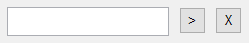

Parameter Generator¶
Opening the GUI¶
Navigate Matlab to the GUI folder and execute parameter_generator_gui in the command window.
Load Parameters¶
Fig. 7 Initial interface.
Remark
Zoom in the image by opening it in a new window.
The initial interface is shown in Fig. 7. To load the default parameter values, click New from Default. To load an existing parameter file, click Load Existing and specify the path to the file. Click “Start” to start editing the parameter values.
Remark
To specify a path (with entries like ), either type the path in the text box or click “>” and manually select the file/folder with a system dialog. Click “X” to remove the path.
Set Parameter Values¶
GUI Assumption
GUI imposes extra assumptions on the parameter values. Such assumptions will be displayed in the message boxes like this one.
GUI Interface¶

Fig. 8 Interface for editing the parameter values.
The interface for editing the parameter values is shown in Fig. 8. The buttons on the top are now disabled and multiple panels appear below.
- Middle panel
Parameters to edit.
Parameters are organized into six panels by their functionality. Switch the panels by clicking the “<” and “>” buttons in the bottom.
- Buttons
The “Clear All Changes” button reverts all edits to the parameter values.
The “Save” button generates the parameter file parameters.m with the edited parameter values and resets the GUI.
Parameters in each panel are described below.
General Information¶
Movie Definition¶
Fig. 9 Panel for Movie Definition, General Information.
File Type. Format of the movies (TIFF or ND2).
Image Paths. Path(s) to the folder(s) storing the images.
GUI Assumption
- TIFF Format
Specify one folder. Images of all channels should be stored in this folder.
- ND2 Format
Possible to specify multiple folders. However, folder names should match the time order.
For example, a movie is stored in two ND2 files. The first file is located in
X:/tracking_code/folder1/, and the second file is located inX:/tracking_code/folder2/. The folder name folder1 is smaller than folder2 in dictionary order, which is consistent with the time order of the files.
Wells. Wells to track.
Frames. Frames to track.
GUI Assumption
All numbers between the specified values (both inclusive) are included.
For example, “Frame 1 to 480” indicates that movies will be tracked from Frame 1 to Frame 480 (480 frames in total).
CMOS. Optional. Path to the MAT file storing the camera dark noise.
Global Jitter Correction. Whether to perform global jitter correction.
Cell Definition¶
Fig. 10 Panel for Cell Definition, General Information.
Nuclear Radius. Average radius (in pixels) of a nucleus.
Number of Signals. Number of channels in the movie.
Signal. Channel name.
Biomarker. Name of the measured biomarker.
GUI Assumption
GUI supports up to five channels. Channel names and biomarker names should include letters and numbers only, and should always start with a letter.
Bias. Optional. Path to the MAT file storing the illumination bias of the channel.
Cytoplasmic Ring?. Whether to compute signals in the cytoplasmic ring.
Training Data and Output¶
Fig. 11 Panel for Training Data and Output, General Information.
Training Data. Path(s) to the training datasets. Possible to specify multiple files.
GUI Assumption
The same datasets will be used for Segmentation (Correction with Training Datasets) and Track Linking.
Output Path. Path to folder storing the outputs.
Mask, Ellipse Movie, Segmentation Info, Vistrack. Optional outputs.
Output?. Whether to generate the output.
Path. Path to the folder storing the output.
Segmentation¶

Fig. 12 Panel for Segmentation.
- Image Binarization
Log-Transform. Whether to log-transform the images.
Method. Method of Image Binarization. Blob Detection or Thresholding.
- Optional Steps
Run Active Contour. Whether to run Active Contour.
Log-Transform for Active Contour. Whether to log-transform the images during Active Contour.
Run Watershed. Whether to run Watershed.
Correct Segmentation Mistakes. Whether to run Correction with Training Datasets.
Track Linking¶

Fig. 13 Panel for Track Linking.
- Migration Probabilities
Sigma of Random Walk. Standard deviation (in pixels) of random walk. Intepreted as the average traveled distance in one frame and one direction. If NaN is specified, this value will be inferred from the training datasets.
If Use Similarity. Whether to account for ellipse similarity when calculating the migration probabilities.
- Post-Processing
Min Track Length. Minimal length (in frames) of a valid cell track.
Max Frames to Skip. Maximal number of frames that a valid cell track can skip.
Signal Extraction¶

Fig. 14 Panel for Signal Extraction.
- Distance of ROI to Ellipse Contours
Nucleus. Distance (in pixels) between the ellipse contour and the outer boundary of the nucleus region.
Inner Cytoplasmic Ring. Distance (in pixels) between the ellipse contour and the inner boundary of the cytoplasmic ring.
Outer Cytoplasmic Ring. Distance (in pixels) between the ellipse contour and the outer boundary of the cytoplasmic ring.
- Computation of Signals
- Compute Signal at. Percentile (between 0 and 100) of the pixel intensities to compute in each region.
Generate Parameter Files¶
Click “Save” after editing all the parameter values. GUI will generate the parameter file (parameters.m) in the GUI folder and returns to its initial interface.